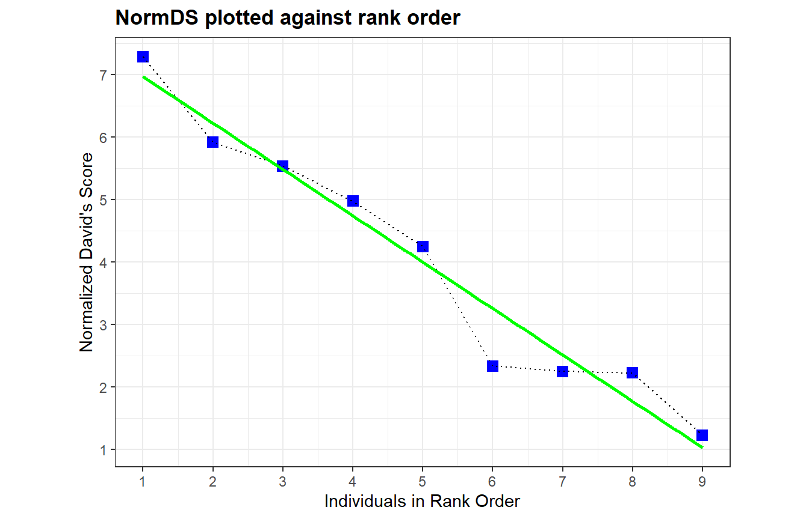

2. Steepnessの算出
2.1 Steepnessとは
続いて、順位序列のsteepnessを算出する。
steepnessは順位序列の厳しさを表し、例えば専制的な種ほどその値は高くなるとされる(Balasubramaniam et al. 2012)。X軸に順位が高い個体から名前を並べ、Y軸にnDSをプロットするとき、その回帰直線の傾きがsteepnessとなる。0から1の値を取り、1に近づくほどsteepnessが高いことを示す。

単回帰分析を行ってやれば、steepness(=傾き)は算出できる。 今回の例では、傾きは約0.7421となることがわかる。
## NDSが高い順に並べ替え
nDS_d %>%
data.frame() %>%
arrange(-NormDS) %>%
mutate(x = 1:n()) -> nDS_d2
## 単回帰分析
r <- lm(data=nDS_d2, NormDS~x)
## 傾き
r$coefficients[[2]]## [1] -0.74205382.2 steepnessパッケージを用いた算出
steepnessパッケージでは、わざわざ単回帰を行わなくてもsteepnessを算出することができる。
stp <- steepness::steeptest(mat, names = individuals,
rep = 1000, method = "Dij",
order = TRUE)
stp$Stp## [1] 0.7420538個体の勝敗がランダムに決まるときに比べて、steepnessが有意に高いかを検定することもできる。
結果、steepnessはランダムな場合よりも有意に高いことが分かる。
summary(stp)##
## RESULTS OF STEEPNESS ANALYSIS OF THE MATRIX OF DYADIC DOMINANCES CORRECTED FOR CHANCE
## =====================================================================================
##
##
## Dij
## ===
##
## V VS FJ B PR MU VB TOR ZV
## V 0.00000 0.87313 0.93519 0.917910 0.87838 0.8929 0.9219 0.9875 0.8793
## VS 0.12687 0.00000 0.86538 0.725806 0.55882 0.8871 0.9762 0.8077 0.9700
## FJ 0.06481 0.13462 0.00000 0.672414 0.75641 0.9615 0.7500 0.9286 0.7083
## B 0.08209 0.27419 0.32759 0.000000 0.95714 0.9872 0.9595 0.9559 0.9914
## PR 0.12162 0.44118 0.24359 0.042857 0.00000 0.8143 0.8548 0.7500 0.9792
## MU 0.10714 0.11290 0.03846 0.012821 0.18571 0.0000 0.6250 0.4333 0.7353
## VB 0.07812 0.02381 0.25000 0.040541 0.14516 0.3750 0.0000 0.6111 0.7000
## TOR 0.01250 0.19231 0.07143 0.044118 0.25000 0.5667 0.3889 0.0000 0.8077
## ZV 0.12069 0.03000 0.29167 0.008621 0.02083 0.2647 0.3000 0.1923 0.0000
##
##
## DAVID'S SCORES
## ==============
##
## DS Values
## V 29.575
## VS 17.261
## FJ 13.814
## B 8.790
## PR 2.228
## MU -14.998
## VB -15.744
## TOR -15.986
## ZV -24.941
##
##
## NORMALIZED DAVID'S SCORES
## =========================
##
## NormDS Values
## V 7.286
## VS 5.918
## FJ 5.535
## B 4.977
## PR 4.248
## MU 2.334
## VB 2.251
## TOR 2.224
## ZV 1.229
##
##
## STEEPNESS
## =========
##
## Slope (absolute) = 0.7421
##
##
## INTERCEPT
## =========
##
## Intercept = 7.71
##
##
##
## SUMMARY STATISTICS OF THE RANDOMIZATION PROCEDURE FOR TESTING STEEPNESS BASED ON THE Dij MEASURES
## =================================================================================================
## Stp
## Empirical value 0.742
## Right p-value 0.001
## Left p-value 1.000
## N simulations 1000.000
## Mean 0.298
## Variance 0.005
## Minimum 0.116
## 25th Pctl 0.249
## 50th Pctl 0.294
## 75th Pctl 0.346
## Maximum 0.500References
Balasubramaniam KN, Dittmar K, Berman CM, et al (2012) Hierarchical steepness and phylogenetic models: Phylogenetic signals in macaca. Anim Behav 83:1207–1218